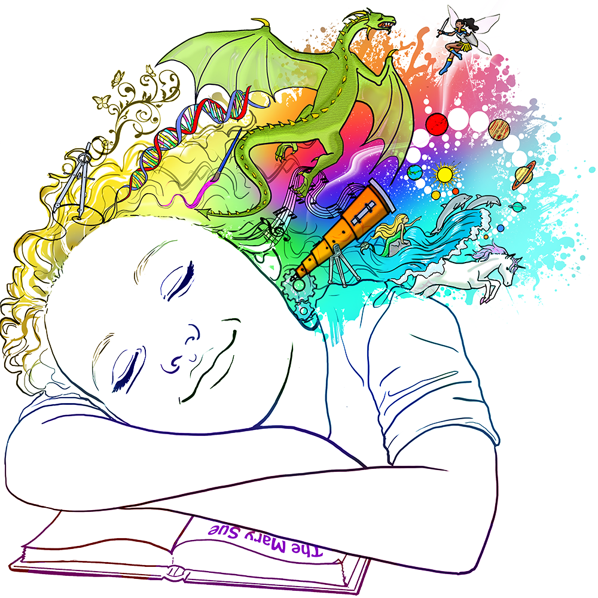

제가 멋쟁이 사자처럼 7기에 지원할 때 생각했던 IT 서비스는 !

"꿈 기록 & 공유 사이트"
저는 꿈이 하루의 기분을 좌지우지할만큼 일상에 큰 영향을 끼친다고 생각했습니다.
하지만 꿈은 기억하기가 매우 쉽지 않은데요,
매일 꿈을 기록하면 자신이 그 때 경험한 상황과 느낌을 기억할 수 있을 것입니다.
또한 음악과 그림을 추가할 수 있도록하여 꿈을 더 풍부하게 표현할 수 있게하고
공유기능을 통해 다른 사람의 꿈을 볼 수 있게 하면 좋을 것 같습니다.
홈으로 ~